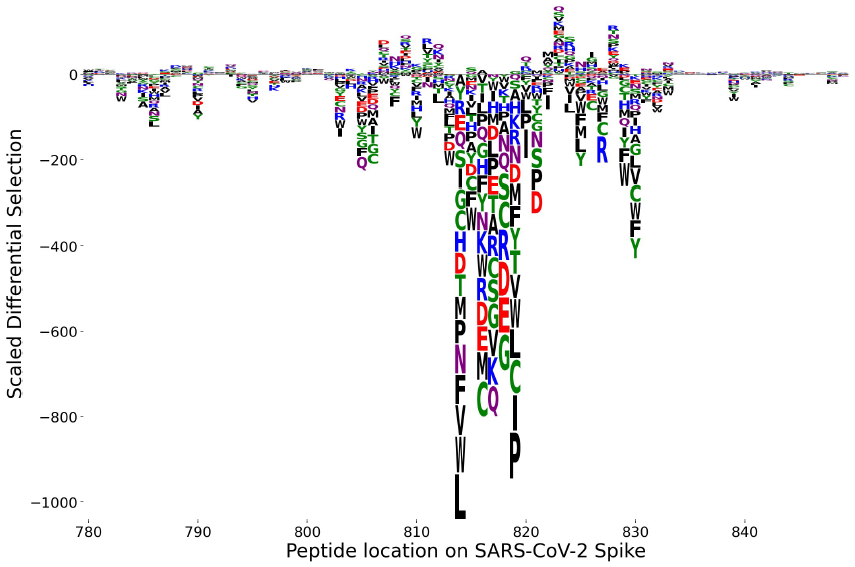
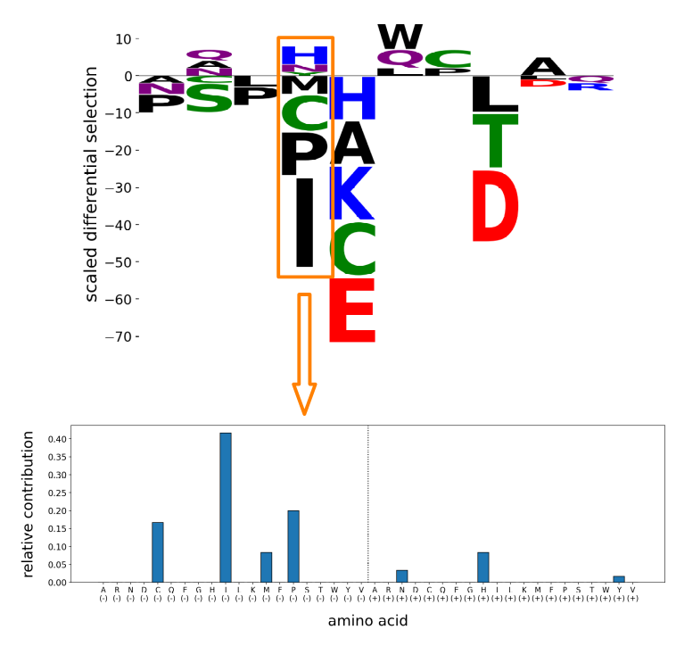
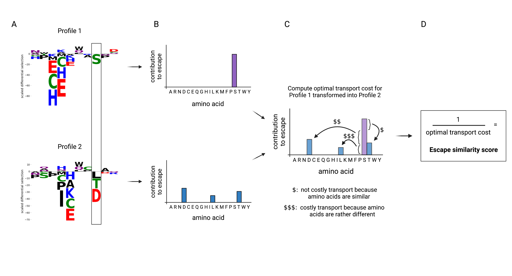

Comparing Escape Profiles
Introduction
Phage-DMS [1] is an application of PhIP-Seq for deep mutational scanning (DMS). In Phage-DMS, the peptide library catalogs possible mutations in the viral protein. Of particular concern are mutations that cause significant loss of antibody binding, potentially allowing the virus to escape the immune response. When considering only mutations that cause single amino acid substitutions, the results can be summarized in an escape profile [2] showing the impact on binding for every possible substitution at each site. This can be visualized in a logo plot where the scaled differential selection [1] of each amino acid substitution is reflected by the height of its one-letter symbol,
{kind=link}
There are two aspects of interest at each site:
the sum over all substitutions reflecting the total potential for change in binding,
the pattern of amino acid contributions, i.e. the relative contribution of each substitution to change in binding.
Naturally, one would like to compare escape profiles of different samples, and a quantitative approach would allow for systematic analysis of many profiles. This page describes a scoring method for comparing two escape profiles. The main steps are:
assigning an escape similarity score to each site by comparing the pattern of amino acid contributions,
computing a weighted sum of escape similarity scores across the sites of interest to obtain a single score for the region.
Escape similarity score at a site
Given two patterns of contributions, we want an approach that accounts for the degree of similarity between any two amino acids, instead of only comparing contributions from matching amino acids. For this purpose, we use the BLOSUM62 substitution matrix [3], which assigns an integer score between two amino acids based on how often their substitution is observed in empirical data. We then map the problem of comparing amino acid patterns to the problem of comparing distributions in the framework of optimal transport.
In brief, an optimal transport problem involves two distributions and a specification of cost to transport “contents” between them, and the objective is to determine how to transform one distribution into the other while minimizing the total cost. This minimum cost reflects the level of similarity between the two distributions; the lower the cost, the more similar they are.
Each pattern is represented as a binned distribution. There are 20 amino acids but a mutation could result in negative or positive differential selection, corresponding to loss or gain in binding respectively, which are two different effects. Therefore, two bins are associated with each amino acid, one for negative differential selection and one for positive differential selection, resulting in a 40-bin distribution. The bin contents are the relative contribution to the total absolute differential selection at the site. For any amino acid pattern, at most 19 bins are non-zero because an amino acid substitution cannot contribute negative and positive differential selection simultaneously, and the wild type amino acid contributes zero by definition.
{kind=link}
The cost matrix is based on the BLOSUM62 matrix. Denote the entries of the BLOSUM62 matrix by \(M_{ij}\), which quantifies an overall similarity between amino acids \(i\) and \(j\). For transport between same-sign differential selection “contents” (e.g. negative with negative) of \(i\) and \(j\), the cost is given by,
The exponentiation is applied so that cost values are positive. Higher values in the BLOSUM62 matrix corresponds to higher similarity between amino acids, and vice versa, so the negative sign is applied to assign the corresponding cost. The factor of 7 is included so that the range of cost values lie within a factor of 10, to avoid a single site from overwhelming the scores of all other sites when we aggregate across a region.
For transport between opposite-sign differential selection, we disregard similarity between amino acids and simply assign a fixed cost of \(C_{\scriptsize \mbox{max}} = \exp\left(4/7\right)\), which is the maximum cost possible because the BLOSUM62 matrix has the minimum entry of \(-4\).
Putting this altogether, the complete cost function is a \(40\times40\) matrix that can be expressed in blocks of \(20\times20\) sub-matrices as the following:
where the off-diagonal blocks are sub-matrices with \(C_{\scriptsize \mbox{max}}\) for all entries.
To solve the optimal transport problem, we use the Python Optimal Transport package [4]. The obtained minimum cost is inversely related to how similar the two escape profiles are, so we define the escape similarity score to be the reciprocal of this cost value. We do this because our interest leans more towards identifying escape profiles that are consistent, and working with similarity score rather than cost makes the interpretation a little easier when we aggregate scores across sites in a region. We attribute a high regional escape similarity score to having several sites with high similarity, in contrast to a low regional cost due to lacking sites with high cost. Of course, the conclusions don’t change either way – cost and similarity are just two sides of the same coin.
The diagram below summarizes the procedure for comparing patterns of amino acid contributions at a site. For brevity, the site in the example contains only negative differential selection in both profiles so we illustrate the distributions with just 20 bins.
{kind=link}
In phippery, the example illustrated by the diagram above translates to the following,
from phippery.escprof import *
profile1 = [
0, 0, 0, 0, 0, 0, 0, 0, 0, 0,
0, 0, 0, 0, 0, 1, 0, 0, 0, 0,
0, 0, 0, 0, 0, 0, 0, 0, 0, 0,
0, 0, 0, 0, 0, 0, 0, 0, 0, 0
]
profile2 = [
0, 0, 0, 0.5,0, 0, 0, 0, 0, 0,
0.2,0, 0, 0, 0, 0, 0.3,0, 0, 0,
0, 0, 0, 0, 0, 0, 0, 0, 0, 0,
0, 0, 0, 0, 0, 0, 0, 0, 0, 0
]
cost_matrix = get_cost_matrix()
compute_sim_score(profile1, profile2, cost_matrix)
"""
0.9744633979128656
"""
The escape similarity score for the site is approximately 0.97. The get_cost_matrix()
function provides the cost matrix based on BLOSUM62 as described above. Note that an
ordering of amino acids is assumed, which is ARNDCQEGHILKMFPSTWYV; hence, the first 20
bins correspond to negative differential selection contributions for amino acids in that order,
and the last 20 bins likewise correspond to positive differential selection contributions.
The get_aa_ordered_list() function returns a list with this ordering,
from phippery.escprof import *
aa_list = get_aa_ordered_list()
print(aa_list)
"""
['A', 'R', 'N', 'D', 'C', 'Q', 'E', 'G', 'H', 'I', 'L', 'K', 'M', 'F', 'P', 'S', 'T', 'W', 'Y', 'V']
"""
Escape similarity score for a region
Having defined and computed the escape similarity score for each site, a score for the comparison across a region is calculated by a weighted sum of site scores. The weights are assigned so that sites contributing larger scaled differential selection in both profiles are given higher importance.
First, compute the relative contribution of each site to the profile. This is the summed absolute scaled differential selection at a site divided by the sum over all sites in the region. Denote these relative contributions by \(\left\{\alpha_k\right\}\) and \(\left\{\beta_k\right\}\) for the two profiles, where \(k\) runs over the sites. Then for each site, we choose the minimum,
The motivation to take the minimum (as oppose to the average) is because we wish to lower the importance of the score at sites that have very different relative contributions in the two profiles (i.e. very high in one and very low in the other). Therefore, we are considering such sites to be rather dissimilar regardless of how concordant their amino acid patterns may be.
Finally, we normalize such that the sum of weights is 1,
Given the set of scores across the sites, \(\left\{s_k\right\}\), the escape similarity score for the region is,
The left and right plots shown below each illustrate a comparison of a pair of escape profiles. In each plot, the top two panels are the logo plots of the profiles under comparison. The third panel is the bar plot of the per site weights, \(\{w_k\}\). The bottom panel shows the weighted per site escape similarity scores, \(\{w_k s_k\}\). The region escape similarity scores are shown at the top of the plot, indicating that the pair of profiles on the right are more concordant than the pair on the left.
{kind=link}
{kind=link}
In phippery, the region escape similarity score can be computed with region_sim_score().